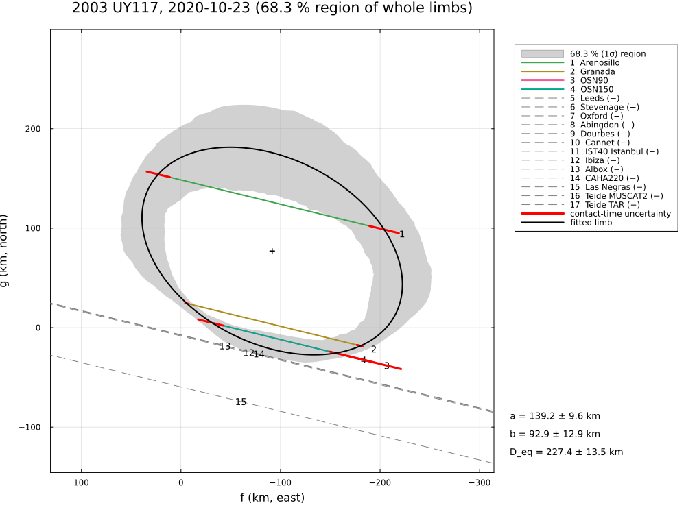

Uncertainty of the limb in the plots
plot(fit; uncertainty, nsigma=1) and plot(posterior; uncertainty, nsigma=1) draw the uncertainty of the fitted limb. It is computed by Monte Carlo:
Draw limbs. About 400 parameter sets are drawn (4000 for
nsigma > 2):- for a fit, from the Gaussian of its covariance matrix; draws that violate a hard constraint (a negative chord crossed, a > b > c, bounds) are rejected, i.e. a truncated Gaussian;
- for a posterior, from the MCMC samples.
Each draw gives a limb: an ellipse, circle or projected 3-D shape with its centre.
Measure distances. In 361 directions θ around the reference centre c₀ (the fitted centre, or the posterior median), the distance ρ_j(θ) of every drawn limb j is measured.
Form the band. Quantiles of these distances define the band. The three kinds differ in what they include and what they guarantee:
uncertainty | Legend label | Each drawn limb placed at | Band in each direction θ | What it means |
|---|---|---|---|---|
:shape (default) | "1σ shape (a, b)" + "1σ centre" | the fitted centre c₀ (only its shape varies) | 15.87 – 84.13 % quantiles of ρ_j(θ) | ±1σ of the shape: the half-width is σa along the major and σb along the minor axis, as the quoted errors of a and b. The uncertainty of the position is the separate 1σ ellipse of the centre (covariance of the drawn centres) |
:pointwise | "68.3 % band (pointwise, 1σ)" | its own centre | 15.87 – 84.13 % quantiles of ρ_j(θ) | ±1σ of the limb's distance in each direction separately, shape and position together. It equals the "1σ uncertainty region" of SORA and most papers, the envelope of the limbs with χ² ≤ χ²_min + 1. Each direction is covered separately, so a whole plausible limb usually leaves the band somewhere: far fewer than 68.3 % of the limbs lie entirely inside (the fewer, the more directions are independently constrained) |
:region (synonyms :simultaneous, :band) | "68.3 % (1σ) region" | its own centre | the pointwise band widened by a common factor k | 68.3 % of the drawn limbs lie entirely inside: the region that contains the true limb with 68.3 % probability. k is the 68.3 % quantile, over the drawn limbs, of each limb's largest deviation from the median limb, in units of the pointwise half-widths (separately inside and outside). The region is never wider than the drawn limbs in any direction, so it does not cross a hard negative chord. It is about twice as wide as the pointwise band |
:draws | "limbs drawn from …" | its own centre | – | the drawn limbs themselves (ndraw) |
:none | – | – | – | no uncertainty |
nsigma sets the level of all three bands. The quantiles become Φ(−nσ) and Φ(nσ) (0.135 % and 99.865 % for nsigma = 3), the region's coverage becomes 99.73 %, and the centre ellipse is scaled to nσ. This reproduces, for example, the 3σ regions of some papers: plot(fit; uncertainty=:pointwise, nsigma=3).
Which one to use:
:shapefor reporting a size and shape: the band agrees with a ± σa and b ± σb. Examples: 2.2 vs 2.1 and 5.7 vs 5.9 km for Huya 2019; 8.4 vs 9.6 and 12.5 vs 12.9 km for 2003 UY117, where the hard negative chords truncate the draws.:pointwiseto compare with published figures; the examples write such a plot as*_paper.png, at the paper's level.:regionto show where the limb as a whole can be, e.g. against negative chords or a shape model.
What the bands can touch or cross
Whether a band may overlap a negative chord, or miss a contact, follows from how it is built. It is not a matter of chance.
The drawn limbs themselves are always admissible. With negative = :hard (the default), a limb that crosses the track of a negative chord has zero likelihood:
- the posterior sampler (MCMC) never accepts such a limb;
- for a fit, draws from the covariance Gaussian that cross a negative chord, or violate another hard constraint (a ≥ b ≥ c, bounds), are rejected.
Every drawn limb therefore lies on the near side of every negative chord, at most touching it. The bands inherit this property or not:
| Display | Can it cross a hard negative chord? | Why |
|---|---|---|
| fitted / maximum-posterior limb (black) | no; it can touch one | it is one admissible limb. Touching means the constraint is active: without the chord the best fit would lie beyond it |
:draws | no | every drawn limb is admissible |
:pointwise | no; it can touch | in each direction it lies between quantiles of the distances of admissible limbs, measured from the fixed centre c₀. Where a negative chord cuts that direction, all limbs end before the chord, so every quantile does too |
:region (68.3 % region) | no; it can touch | the pointwise band is widened, but capped in every direction at the outermost drawn limb |
:shape (default) | yes, it can | each drawn limb is moved from its own centre to the fitted centre, to isolate the shape. A large limb is often admissible only because its centre lies farther from the chord; moved to the fitted centre, it can reach across the chord. The overlap shows the size of the shape uncertainty. It does not mean that a limb crossing the chord is allowed |
| 1σ centre ellipse | not applicable | it shows the uncertainty of the position of the centre, not of the limb. It may overlap chords and limb alike |
Typical situations (the posterior and the fit behave alike; the posterior also includes the priors and is exact where the fit's Gaussian is only approximate):
- A negative chord close to the limb (e.g. 2003 UY117, chords 12–14):
- the admissible limbs pile up against the chord;
:pointwise,:regionand:drawsend exactly at the chord on that side, so their band is one-sided there, often with the fitted limb at its edge;:shapemay extend beyond the chord;- the band is wider on the side without constraints (e.g. the unobserved northern limb).
negative = :soft: limbs may cross a negative chord by aboutsensitivity × speed(a short event within one exposure). All displays may then overlap the chord by that amount.negative = :none: negative chords are ignored and all displays may cross them. The Huya 2023 example uses this to show how far the paper's solution crosses the negative chords.- Positive chords and their contact times (red segments): positive contacts are not hard constraints. Limbs miss them by residuals of about σt × speed (plus σlimb).
- A band normally overlaps the red segment of every contact.
- A band that clearly misses a red segment points to a residual of more than about 1σ: a timing error, a clock offset, topography, or a too simple shape.
- With
σ_limb(e.g.fit_limb(...; σ_limb=:auto)) the bands widen accordingly.
- The fitted limb at the edge of a band: the band follows the distribution of the drawn limbs, not the best fit. When a constraint is active, or the posterior is skewed, the best limb can lie near or at the edge of the band (e.g. 2003 UY117 in the north). This is a property of the distribution, not an error.
- Sizes compared:
:shape(shape only) ≤:pointwise(shape and position) <:region(whole limbs), in each direction. Only:shapeagrees with a ± σa and b ± σb; only:regioncontains the true limb as a whole with 68.3 % probability.
The centre ellipse is drawn around the cross, with the spread of the drawn centres. Its centre is not the mean of the drawn centres, which rejected draws or a skewed posterior shift away from the fitted centre.
The three describe the same fit. They differ by construction. The pointwise band contains the centre error; the shape band does not. With five ellipse parameters, enclosing 68.3 % of whole limbs needs Δχ² ≈ 5.9 rather than 1; along a curve the effective number of dimensions is smaller. The 68.3 % region is therefore wider than the pointwise band, often about as wide as the envelope of the limbs with Δχ² ≤ 9 (SORA's "3σ"); how much wider depends on how many directions the chords constrain independently.
The three displays for 2003 UY117 (four chords, thirteen negative chords):
:shape (default) | :region | :pointwise |
|---|---|---|
 |  |  |